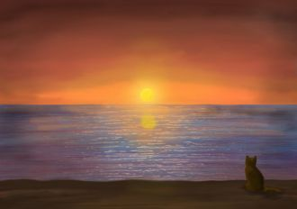
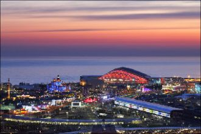
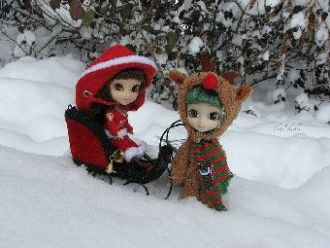

Слишком часто беда стучится в двериНо не трудно в Спасателей поверитьЛишь стоит только их позватьДрузей не надо долго ждать
Мы выходим из дома,Двери распахнуты настежь,Всё повторится снова,Здесь начинается счастье.Мы покидаем офис душный И обретаем крылья.
Х1ун дича хир яра со хьан 1уьйре?
Х1ун дича хир яра со хьан суьйре?
Х1ун дича хир дара со хьан дуьне?
Х1ун дина кхочур яра со хьан даге?
Там в горах, где есть река,Жил да был Ходжа-ака,Весельчак, добряк, смельчак,С ним не попадёшь впросак.Хоть ты не богат Ходжа,
Мы вместе...Мы вместе...

[як почуто]
О-о о о! О-о о о! Та визажне вирная
О-о о о! О-о о о!
Очень долго я тебя ждала,И всё как в сказке со мной случилось.Закружилась моя голова,И я влюбилась.Позабыла обо всех делах
Дашо нур даржа деш,Дуньен чу можа малх кхета.Седарчий цу стиглахь,Безамна шаьш къежаш хета.
Осенний Васильевский остров,Моя голубая мечта!Мосты, храма розовый остов,И стылая в речке вода.

Прекрасен в Сочи бархатный сезон –Цветы, хиты, сверкающий неон…Встречает песней Новая волна,Я в Олимпийский снова влюблена.
Сэнхир хадагаа үргэн баригша, Сэлмэг бодолтой, сэсэн үгэтэй, Сарюун газарта амар ажаhуугша, Солыень дууданаб Буряад арадайнгаа!
Буквы разные писатьТонким пёрышком в тетрадьУчат в школе, учат в школе,Учат в школе.Вычитать и умножать,Малышей не обижать
Mans draugs mēs ar Tevi dzīvojam Latvijā.Mēs bieži nesaprotam, bet mums tā ir vienīgā.Tu mosties ar Latvijas rītu ej gulēt, kad saule riet.
Ритмы засыпающего дняМы своим дыханием заглушаем.Каплями безумного огняБесконечной ночью улетаем.
хайлт
Пожелаем педагогам позитивных изменений: Аттестации успешной всем - без всяких исключений!Пусть все планы воплотятся в полной мере - на "отлично",
It might seem crazy what I'm about to saySunshine she's here, you can take a breakI'm a hot air balloon, I could go to space

Aaye aao taare aasamaan ke dharati pe kisane utaareKis ne ham ko toda hamein chhoda kisake sahaare
Пусть Новый Год, как чистый лист,Заполнит почерк ваш со смыслом!Сегодня каждый журналистПотоком позитивных мыслейНаполнит душу, сердце, ум
Oh Baby, nimm meine Hand,ich hab alles schon gepackt,komm wir beide gehen weg von hier...